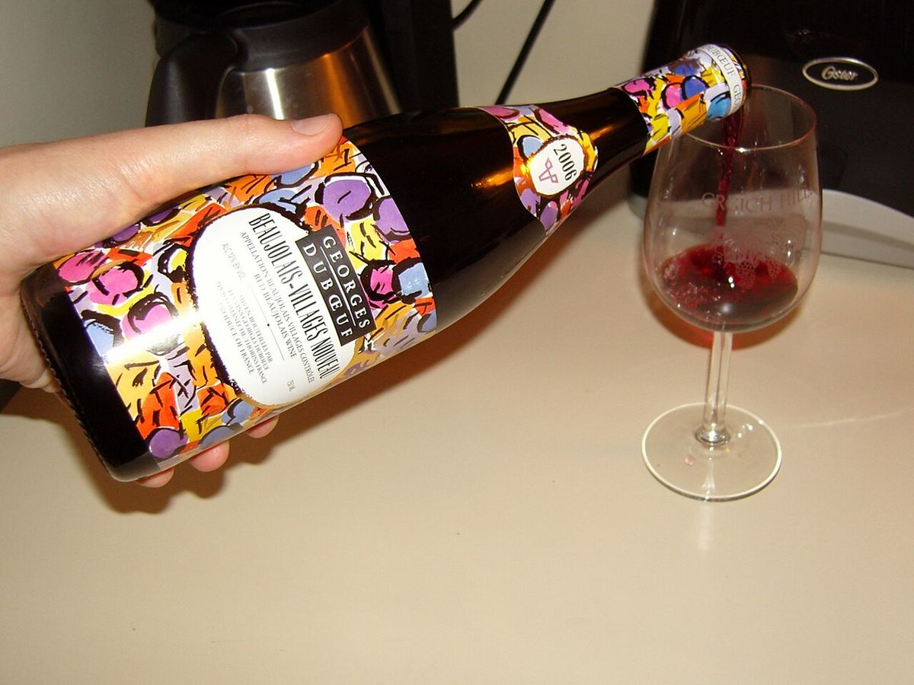
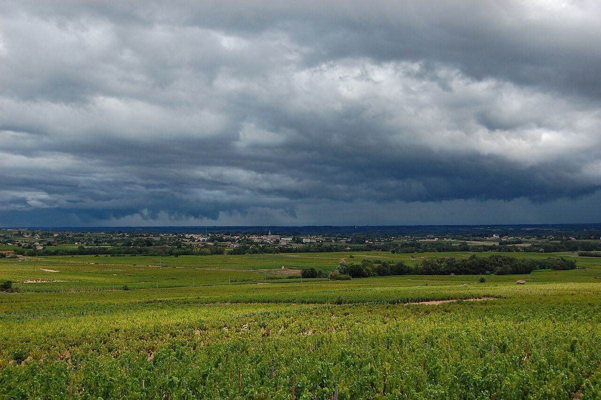

ROSSO

Il Beaujolais, tra il Mâconnais e Lione, è la terra del Gamay. I suoi vini vanno dal Beaujolais Nouveau, messo in commercio poche settimane dopo la vendemmia, ai dieci crus del nord, su suoli granitici.

Il Beaujolais deve il nome a Beaujeu, antica capitale dei signori della regione. Il suo vino riforniva da secoli la vicina città di Lione, il suo mercato naturale. Il Gamay, bandito nel 1395 dai migliori vigneti della Borgogna dal duca Filippo l'Ardito, trovò su queste colline una terra in cui divenne il vitigno dominante. Nel Novecento il fenomeno del Beaujolais Nouveau, un vino giovane messo in vendita poche settimane dopo la vendemmia, diede alla regione una grande notorietà internazionale; dal 1985 esce sul mercato il terzo giovedì di novembre. Negli ultimi decenni molti produttori hanno posto l'accento sui crus e su vini più strutturati.
La regione si estende a sud del Mâconnais, principalmente nel dipartimento del Rodano, lungo i versanti orientali dei monti del Beaujolais, che la proteggono dai venti occidentali. Il clima è semicontinentale, con una leggera influenza mediterranea che risale la valle della Saona. Pur condividendo un'organizzazione storica con la Borgogna ed essendo spesso inclusa in essa, il Beaujolais ha una propria identità e un proprio organismo interprofessionale.
La divisione geologica è netta. Il nord poggia su graniti, spesso disgregati in una sabbia granitica detta localmente gore, oltre che su scisti e altre rocce cristalline; qui si trovano i crus e la maggior parte del Beaujolais-Villages. Il sud, la zona delle Pierres Dorées, ha suoli argilloso-calcarei e sedimentari e produce soprattutto Beaujolais.
Esistono tre livelli: Beaujolais, Beaujolais-Villages e dieci crus commercializzati con il proprio nome, spesso senza menzionare il Beaujolais in etichetta: Saint-Amour, Juliénas, Chénas, Moulin-à-Vent, Fleurie, Chiroubles, Morgon, Régnié, Brouilly e Côte de Brouilly. Fleurie e Chiroubles sono di solito associati a vini aromatici e leggeri; Moulin-à-Vent e Morgon a vini più strutturati e adatti all'invecchiamento; la Côte de Brouilly occupa i pendii del monte Brouilly, di antica roccia vulcanica.
Il Gamay, dalla buccia violacea e dalla polpa bianca, è quasi l'unico vitigno a bacca rossa. Una tecnica molto diffusa è la macerazione semicarbonica: i grappoli interi vengono messi in vasca e una parte della fermentazione avviene all'interno degli acini intatti, dando vini fruttati, dal colore vivace e dai tannini morbidi. Molti produttori dei crus impiegano anche metodi più tradizionali, con diraspatura e affinamento più lungo. Si producono inoltre piccole quantità di Beaujolais bianco, da Chardonnay, e di rosato.
